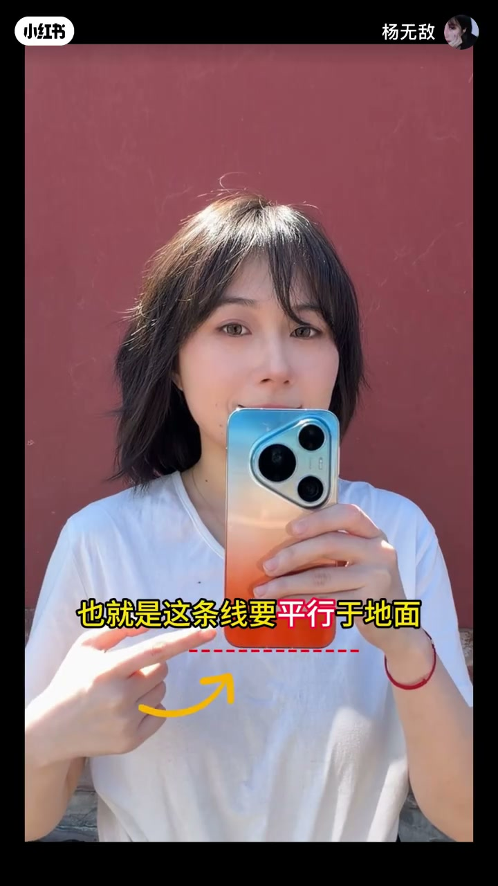
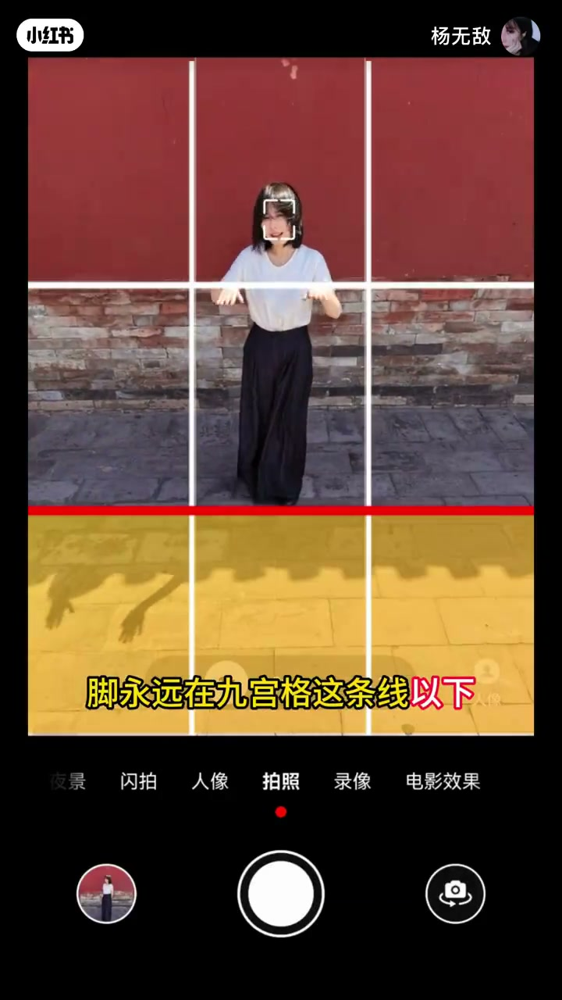
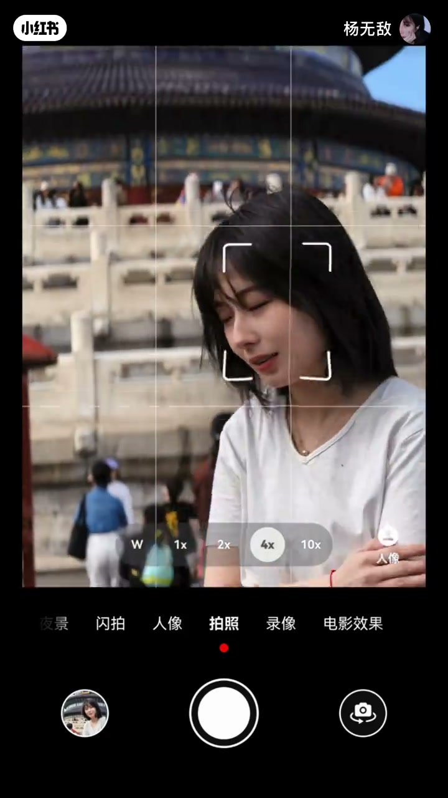
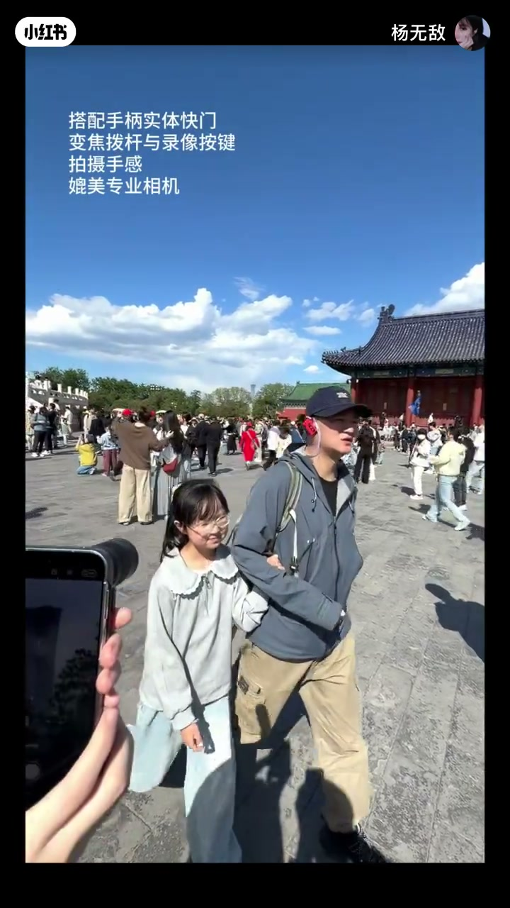
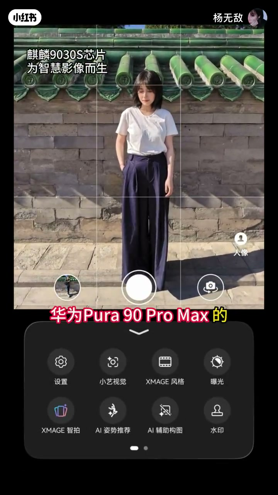
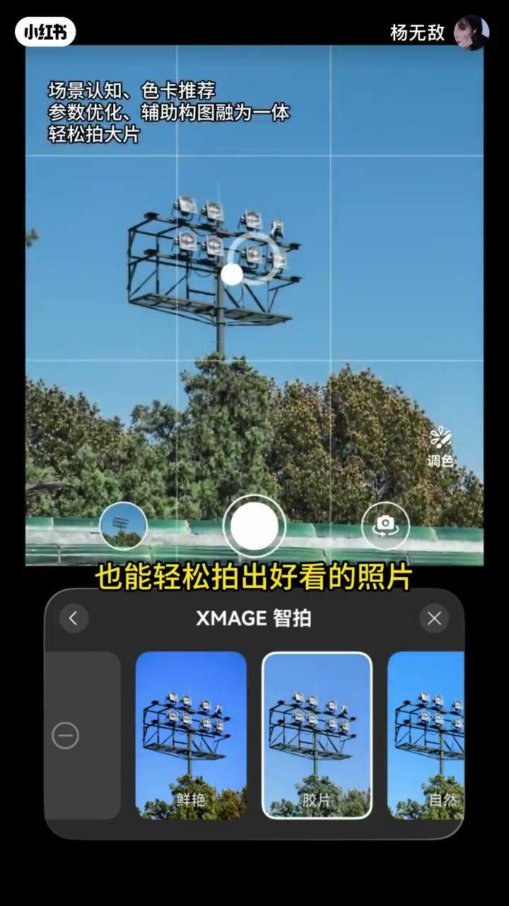
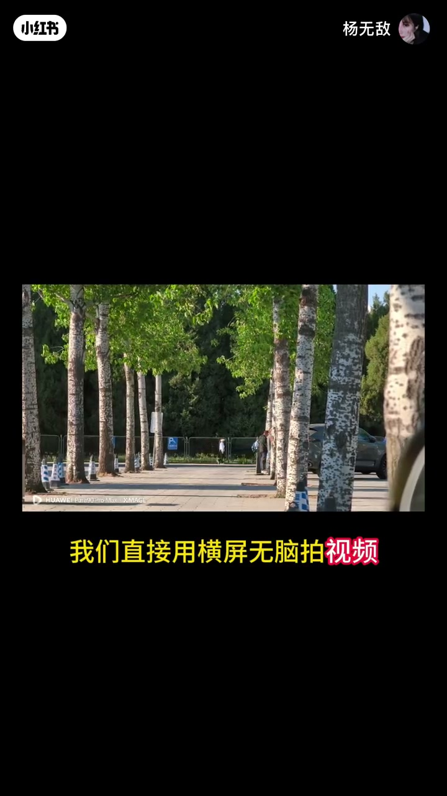

内容要点
一支 2 分 09 秒的旅游拍照指南：针对假期人多、出片慢的痛点，给出四个实用技巧——手机永远要平的构图基础、人多用长焦避开人群、同一姿势不超过三秒保持生动、用横屏视频抓拍转瞬即逝的风景再挑帧拼图。最后提醒：旅程不只有出片，愉快的经历才让旅途更美好。
知识结构
手机永远要平（水平线平行地面）；脚永远在九宫格这条线以下才显腿长；人放在区域内、上方留白，为后期裁剪留空间。
先退后五步，再用长焦放大；让摄影师微微蹲下仰拍，基本完全避开人群，还能把远处山和建筑拉到眼前。
同一姿势不要超过三秒，不断重复动作，即使简单的比耶也能生动；华为 Pura90 Pro Max 的 X-MAGE 智拍还能按场景推荐姿势、一键构图。
遇到转瞬即逝的风景，用横屏无脑拍视频，再挑出最好看的三帧拼成长图，电影感、氛围感、故事感同时拥有。
旅游高效出片四技巧：手机端平、长焦避人群、姿势多变化、视频里挑帧。技巧之外，旅程的愉快经历和融洽氛围，才是照片背后真正值得留下的东西。
00:00-00:40技巧一：打好构图基础
视频以「马上出去旅游，真想拍点人生照片」的真实诉求开场，但假期人多、出片慢是共同的痛点。「那我教你四个技巧，只要学会了，就能在旅游中高效出片。」
第一点，「务必打好以下基础，出片率立刻提升 90%」。首先是「手机永远要平」，即屏幕上的水平线要平行于地面；「可以转动手机，但永远是这样转，而不是这样转」——转的方向有讲究。其次是「脚永远在九宫格这条线以下，才会显得腿更长」。最后是「人永远放在这个区域内，上方要留白」，这样不仅直出好看，还能为后期裁剪提供更多空间。


00:40-00:59技巧二：人太多，用长焦
「人太多，用长焦。」第二点的操作非常具体：「先退后五步，再用长焦放大，再让你的摄影师微微蹲下仰拍，就能基本完全避开人群，留下最干净的画面。」
长焦的另一个价值是拉近远景：「长焦还很适合跟远处的景点合拍，远处的山啊、建筑，就能够立刻被拉到眼前。」

00:59-00:96技巧三：姿势不超过三秒
「同一个姿势，不要超过三秒。用一个动作超过三秒钟，就会变得尴尬。」第三点是关于动态：「要不断的重复这个动作，这样呢，即使是简单的比耶，也能很生动。」
视频还展示了华为 Pura90 Pro Max 的 X-MAGE 智拍功能：「它可以根据场合、道具和人物智能识别，为你推荐当下最合适的姿势。有它当你的随身 Pose 机，再也不怕姿势尴尬。」它还能「智能识别身边场景，为我们一键构图、推荐合适的个性色卡，即使让路人帮拍，也能轻松拍出好看的照片。」



00:96-01:29技巧四：横屏无脑拍视频
「在里头呢，我们常会遇到很多转瞬即逝的风景，来不及多说了。」第四点最省力：「我们直接用横屏无脑拍视频。」
「最后只需要在这些视频里调出最好看的那三帧，拼成长图——电影感、氛围感、故事感，同时拥有。不再浪费时间在打卡照上，因为每一帧都是最后的出片素材。」
结尾回归初心：「最后最重要的是，旅程不只有出片。愉快的经历、融洽的氛围、眼中的风景，是这些才使这些旅途更加美好。」

完整转录（83段）
以下文本由 Whisper medium 模型自动转录，可能存在少量识别误差，已尽可能修正。
哎 我马上五一出去旅游了
真想拍点人生照片（保留）呢
那去拍呗
可是假期人实在太多了
而且每次为了出片
都要耽误我好长时间
那我教你四个技巧
只要学会了
就能在旅游中高效出片
第一点
务必打好以下基础
出片率立刻提升90%
手机永远要平
也就是这条线要平行于地面
可以转动手机
但永远是这样转
而不是这样转
脚永远在九宫格这条线以下
才会显得腿更长
人永远放在这个区域内
上方要留白
这样呢不仅直出好看
还能为后期裁剪
提供更多的空间
第二点
人太多 用长焦
先退后五步
再用长焦放大
再让你的摄影师
微微蹲下仰拍
就能基本完全避开人群
留下最干净的画面
长焦还很适合
跟远处的景点合拍
远处的山啊 建筑
就能够立刻被拉到眼前
第三点
同一个姿势
不要超过三秒
用一个动作超过三秒钟
就会变得尴尬
要不断的重复这个动作
这样呢
即使是简单的比耶
也能很生动
也可以使用这台
华为Pura90 Pro Max（保留）的
X-MAGE（保留）智拍功能
它可以根据场合 道具
和人物智能识别
为你推荐当下最合适的姿势
有它当你的随身Pose机
再也不怕姿势尴尬
这个X-MAGE（保留）智拍功能
就能让你的摄影师
在你面前
再也不怕姿势尴尬
这个X-MAGE（保留）智拍功能
还可以智能识别身边场景
为我们一键构图
推荐合适的个性色卡
即使让路人帮拍
也能轻松拍出好看的照片
在里头呢
我们常会遇到很多
转瞬即逝的风景
来不及多说了
我们直接用横屏（保留）无脑拍视频
最后只需要在这些视频里
调出最好看的那三帧
拼成长图
电影感 氛围感 故事感
同时拥有
不再浪费时间在打卡照上
因为每一帧
都是最后的出片素材
最后最重要的是
旅程不只有出片
愉快的经历
融洽的氛围
眼中的风景
是这些
才使这些旅途更加美好